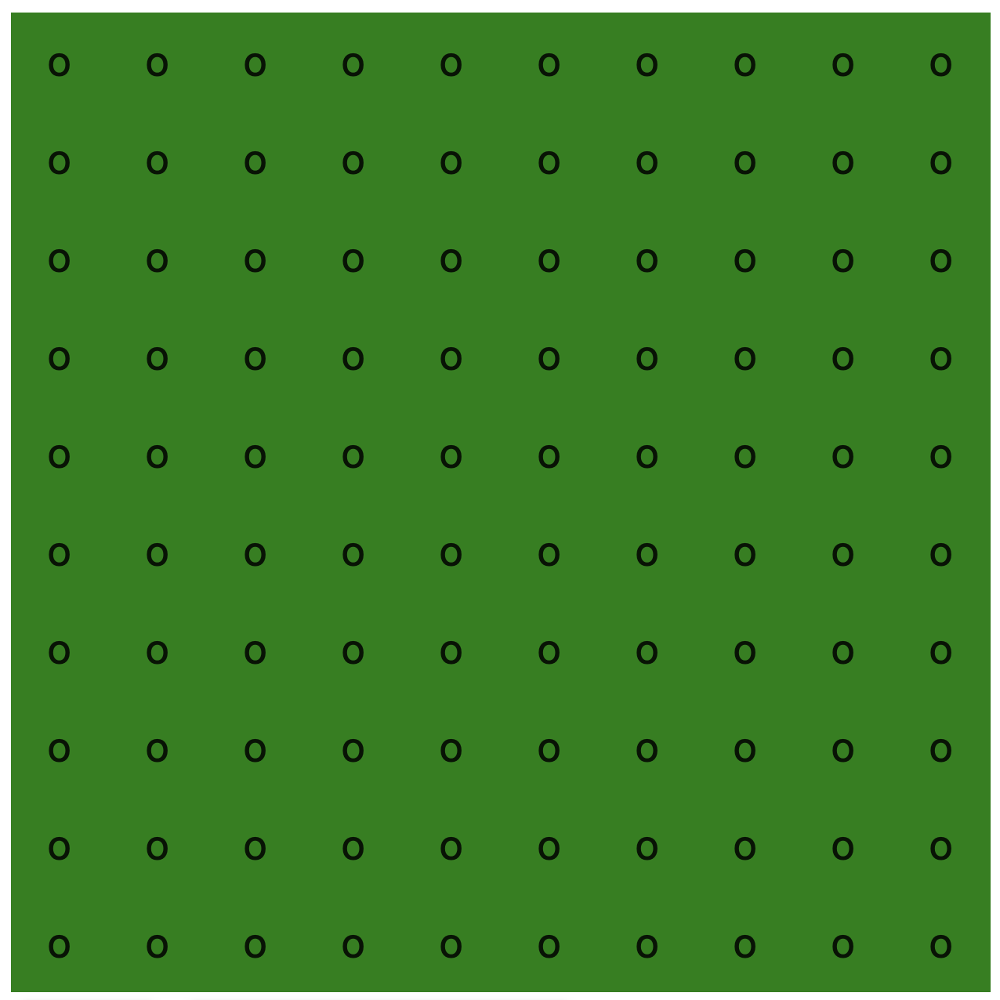
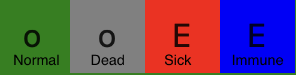
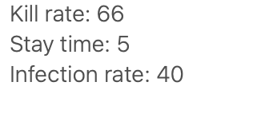

"Virus Simulator" is a simulation where, you simulate viruses! Of course this isn't accurate to the real world. But it simulates some real world characteristics. For example, how different traits of some viruses can make them more deadly. How they spread in between people. How people infected by viruses can gain immunity, and how that immunity can be passed down to their descendants. All of these ideas, and more, are explored in "Virus Simulator". So, let's dive in!
The simulation takes place on a grid. Today, we'll use a 10x10 one.
There are four types of people in the grid. Normal, Immune, Sick, and Dead.
Normal: A normal person. It's color is green. It isn't anything special. It will always have the letter, 'o'.
Dead: A dead person, killed by a virus, or done manually. The color is grey. It will always have the letter 'o'.
Sick: A sick person is colored red. That means it's currently infected with a virus. You can see what virus it is, by looking at it's letter.
Immune: This person was sick, but it survived, and is now immune to the virus. It's color is blue. You can tell what virus it's immune to by looking at the letter.
Each virus has 3 traits. It's kill rate, it's time it stays in the patient, and the infection rate.
Kill rate: This the percent chance, from 0-100, on the probability of the virus killing the patient. A higher kill rate means a higher chance of the patient dying. However, the patient becomes immune from the virus if it survives.
Stay time: The stay time determines how long the virus stays in the patient. It could be any whole positive number. Once the stay time is over, the kill rate and random chance decide the fate of the patient.
Infection rate: Every generation the patient is alive, it has a chance to infect the others around it. This chance is called the infection rate. If the infection rate is 40, there will be a 40% chance an adjacent person to the patient gets infected by the same virus.
If a normal person or an immune person is around a dead person, there is a chance of reproduction. That chance is controlled by the reproduction rate. If the reproduction rate is 50, there is a 50% chance reproduction will happen. The dead person will be turned alive. However, genetics are also at play. If a normal person is what made it alive, then the person will be normal. However, if an immune person made them, the dead person will be born as immune, with the same immunity to the virus as it's parent had.
The controls are very important. They allow us to interact with the simulation. So, let's see what they are!
There are two main ways to run the simulation. "Start", and "Update by 1 frame". What update does, is that when you press it, the simulation updates by 1 generation. However, it can get tedious doing that. So, there's the start button. When you press it, the simulation starts playing one frame every second. You can also pause it. However, theres also a way to edit the amount of time passed between generations.
There are two variables you can edit. The reproduction rate, and the seconds per frame. The reproduction rate is, well, the reproduction rate, which you can edit. You can also edit the seconds per frame, which controls how much time is spent between each generation. Be warned. Anything around .1 or below can make it so fast, you can't press buttons to do anything or stop it.
Make normal and kill are two ways you can directly interact with the world. When you click them, you'll see an "Enabled" text in front of them. Click on any person in the board. If you have "Make Normal" enabled, it will turn normal. If you have "Kill" enabled, the person will die and turn dead.
This button is very interesting. It allows you to make your own virus. It will ask you questions, such as the name. Then it will ask you to fill out the traits. And now, you have a new virus, which can be accessed in virus options.
This section has all of your viruses. With them, you can do two things. Infect someone, or make them immune. These two buttons work with the enable system we talked about. With this, you can start a pandemic, and make some random person immune.
That was everything about this simulator, and how it works. I hope you have fun playing with it, and messing around with it.
Have fun!